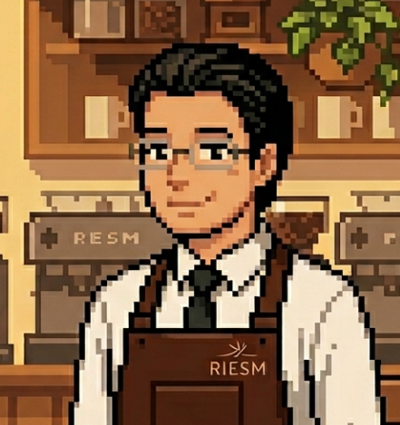
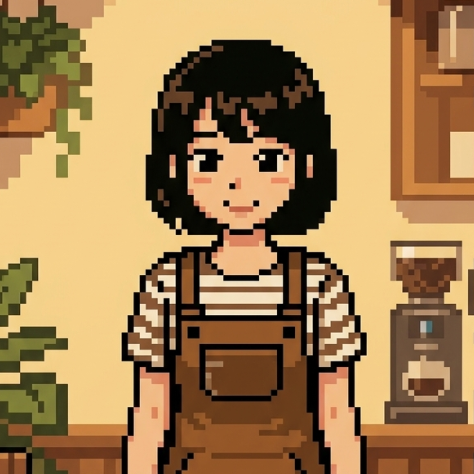

01
個人情報の入力なし
氏名・年齢・社員番号などの入力は不要です。回答と結果は利用者本人のブラウザ内で処理されます。
企業用 / キャリア面談・1on1支援
働くうえで譲れない価値観を、短い設問と物語の選択から見つめるための企業向けWebアプリです。 結果は面談や1on1での対話のきっかけとして活用できます。
キャリアアンカー（心の錨）とは、エドガー・シャインというキャリア理論の研究者が提唱した考え方です。簡単に言えば、働くうえで自分がどうしても譲れない価値観のことです。
収入、安定、専門性、自由、挑戦、人の役に立つこと。人によって、大切にしているものは少しずつ違います。
自分の心の錨を知っておくと、仕事や人生の選択で迷ったときに、自分を見失いにくくなります。キャリアアンカーアプリは、あなたの中にある大切な軸を、静かに見つめるためのものです。
お試しアプリのパスワードは otameshi です




Overview
キャリアアンカーアプリは、社員一人ひとりが「自分が大切にしている役割や働き方」を見つめるための入口です。 診断結果で人を決めつけるのではなく、本人が納得して話しやすくなる材料をつくります。
氏名・年齢・社員番号などの入力は不要です。回答と結果は利用者本人のブラウザ内で処理されます。
会社名とパスワードを設定した専用ページとして展開できます。必要に応じて社内相談先の案内も掲載できます。
結果はPDFとして保存できます。キャリア面談や1on1に本人が持参し、対話の起点として活用できます。
Two Scenes
同じ構成のアプリを、利用者の雰囲気や導入場面に合わせて切り替えられます。 まじめに落ち着いて使う場にも、少し遊び心を入れたい研修にも対応できます。
マスターと理澄が、静かに内省する時間を案内します。
リフレムとハルカが、物語に入るように自己理解を支えます。
Contact
導入前に無料お試し版で、実際の画面や結果レポートの雰囲気を確認できます。 ご相談や導入決済も、必要なタイミングでお進みください。
お試しアプリのパスワードは otameshi です
Guide
アプリの実施方法と、結果を面談・1on1で扱うときの基本姿勢をまとめています。 結果は評価や分類のためではなく、本人が自分の言葉でキャリアを考えるための材料として扱います。
社内で案内されたURLを開きます。
必要に応じて、案内されたパスワードを入力します。
自分の感覚に近いものを選んで進みます。
すべての設問に回答すると、結果が表示されます。
必要に応じて、結果をPDFとして保存します。
本人の判断で、面談や1on1に持参・共有します。
本アプリは、利用者自身が大切にしているキャリア価値観を振り返るための自己理解ツールです。
結果は評価や判断の材料ではなく、本人の内省を深め、面談や1on1で対話を始めるためのきっかけとして扱います。
氏名・年齢・社員番号などの入力は不要です。回答や結果は、利用者本人の端末・ブラウザ内で処理されます。
社内で案内されたURLにアクセスし、必要に応じてパスワードを入力してください。表示される設問では、自分の感覚に近いものを選んでくださいね。
すべての設問に回答すると結果が表示されます。必要に応じてPDFとして保存し、面談や1on1には本人の判断で持参・共有できますよ。
結果に正解・不正解はないのじゃ。また、結果がすべてを決めるものでもないぞ。
「しっくりくる部分」と「少し違うと感じる部分」の両方を手がかりにして、自分が大切にしたい働き方や役割を考えてみるのじゃ。
面談担当者は、結果を説明したり評価したりするのではなく、本人の考えを聴くための材料として扱うと効果的ですよ。
問いかけの例です。
問いかけた後の沈黙も、本人が自分の言葉を探している大切な時間として、ゆっくり待ってあげてくださいね。
本アプリの結果は、本人の内省と対話のための参考情報です。人事評価、採用選考、配置転換、昇格・降格、処遇判断などの直接材料として使用しないでください。
結果PDFを会社や面談担当者へ提出するかどうかは、利用者本人の判断を尊重してください。アプリは主役じゃなく、主役は利用者本人なのじゃー。
Contact
社内キャリアコンサルタントの設置。キャリア面談の実施、1on1への活用について、また研修実施の依頼など――nininまで気軽にご相談ください。
アプリのご利用は、Stripeでのサブスクリプション決済（クレジット）での対応となります。
50人以下の会社・組織へは：月額1,800円
50人超〜200人 は：月額2,900円
200人超・個別調整・買い切り：ご相談ください。
お試しアプリのパスワードは otameshi です